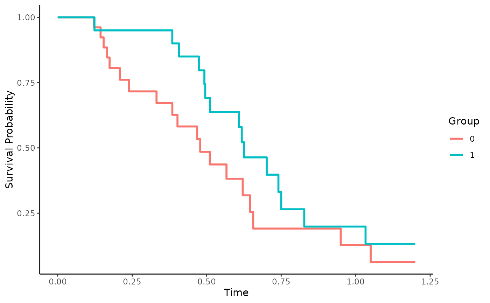

Group-Specific Kaplan-Meier Survival Curves
surv_km.RdThis page explains the details of estimating group-specific Kaplan-Meier curves for single event time-to-event data (method="km" in the adjustedsurv function). All regular arguments of the adjustedsurv function can be used. Further arguments specific to this method are listed below.
Calculates standard Kaplan-Meier survival curves, stratified by the group variable. NO adjustment for any confounders is made. This function is included only for reference and should not be used when confounder adjusted survival curves are desired.
Arguments
- conf_type
The type of confidence interval that should be calculated. Has to be a character string, passed to the
conf.typeargument in thesurvfitfunction. Defaults to"log", which is also the default insurvfit.
Details
Type of Adjustment: NO adjustments are made. This is just a stratified Kaplan-Meier estimator.
Doubly-Robust: Estimates are not Doubly-Robust.
Categorical groups: Any number of levels in
variableare allowed. Must be a factor variable.Approximate Variance: Calculations to approximate the variance and confidence intervals are available.
Allowed Time Values: Allows both continuous and integer time.
Bounded Estimates: Estimates are guaranteed to be bounded in the 0 to 1 probability range.
Monotone Function: Estimates are guaranteed to be monotone.
Dependencies: This method relies on the the survival package.
Value
Adds the following additional objects to the output of the adjustedsurv function:
survfit_object: Thesurvfitobject used to calculate the Kaplan-Meier curves.
References
E. L. Kaplan and Paul Meier (1958). "Nonparametric Estimation from Incomplete Observations". In: Journal of the American Statistical Association 53.282, pp. 457-481
Author
The wrapper function was written by Robin Denz, the survfit function (which this wrapper is build around) was written by other people. See ?survfit for more details.
Examples
library(adjustedCurves)
library(survival)
set.seed(42)
# simulate some data as example
sim_dat <- sim_confounded_surv(n=50, max_t=1.2)
sim_dat$group <- as.factor(sim_dat$group)
# calculate un-adjusted kaplan-meier survival curves
adjsurv <- adjustedsurv(data=sim_dat,
variable="group",
ev_time="time",
event="event",
method="km")
# plot the curves
plot(adjsurv)
